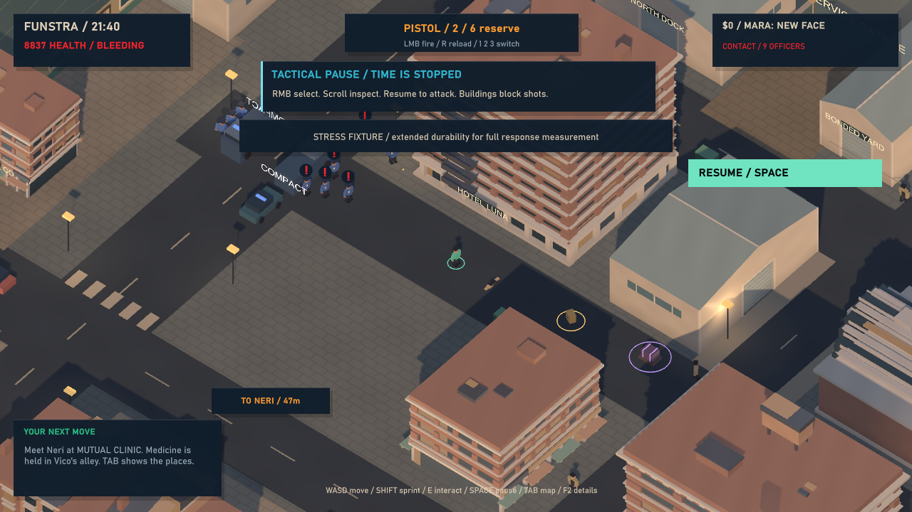
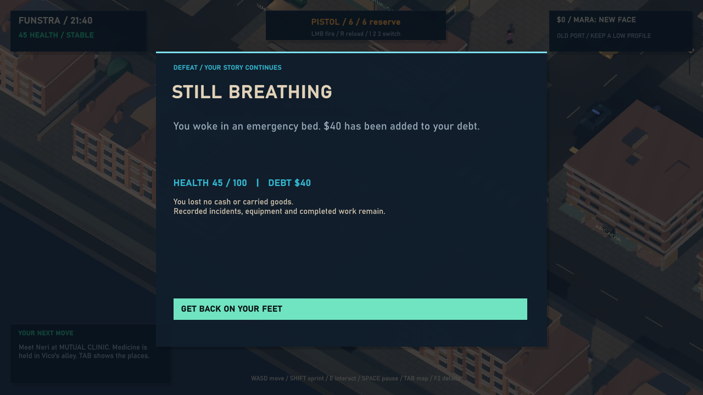
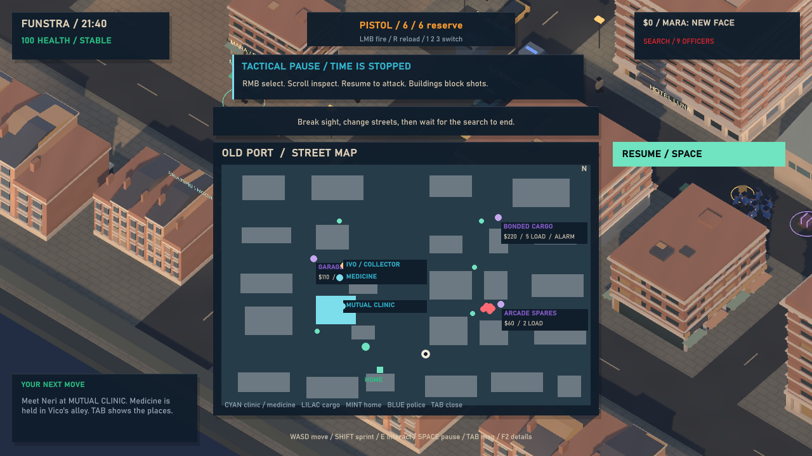
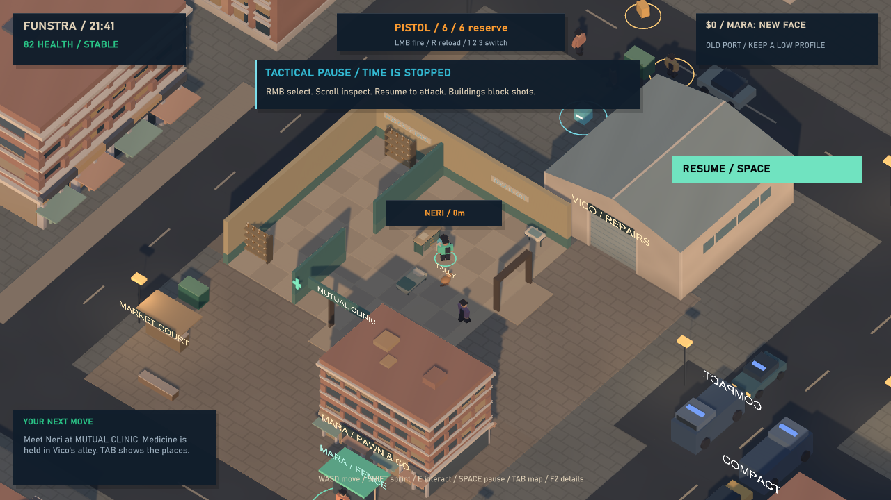
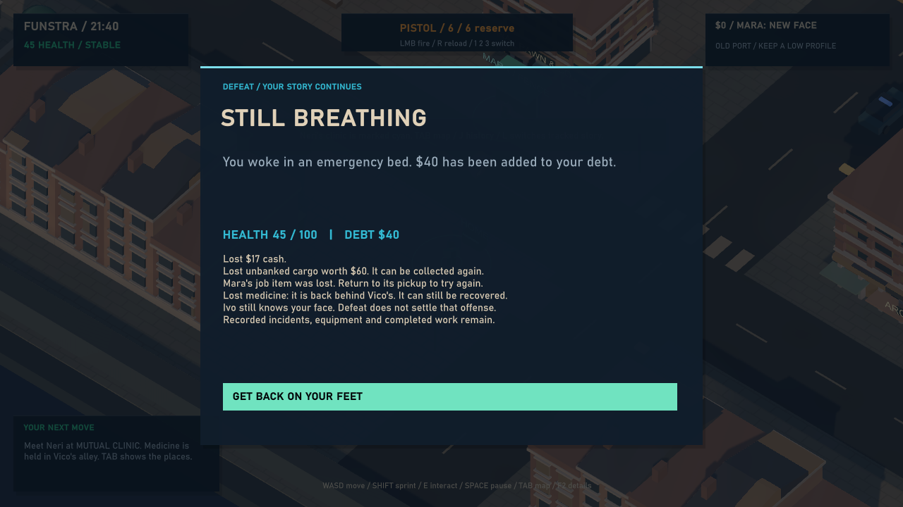

Funstra / Field review / 08 September 2026
Pressure and Escape
Nine officers can bring collective fire. Read the danger, break contact and find a way home.
Playable increment 0.4.2. Two trucks, nine police maximum, pistols and finite ammunition. Rifle squads, army units and physical grenades remain future slices.
4 independent guided reviews309 core runtime checks2,213 editor checksAll tests muted
Four lenses, four recorded verdicts
Each reviewer independently launched the same identified executable, passed the full 41-check Pressure route, opened nine fresh captures and inspected the complete log and profiles. These are guided scripted build reviews, not human free play. Original reviews and scores remain unedited.
Dag Møller
8/10
Finite pressure, real escape
All nine officers contribute, with ammunition and reports still accountable. Delayed retreat and depleted officers under ordinary arrest rules remain the next coordination proof.
Full independent review ↗Priya Raman
8/10
Losses tell the truth
Recovery now describes what was actually lost. The clinic return is visible; the assaulted resident and their social aftermath still need a scene.
Full independent review ↗Marcus Webb
8/10
A readable fight and return
Pause, map and ammunition coexist. Fresh runs pass cleanly; the shared wounded replay narrows the bandage gap, while timing and lower-tier hardware remain unproven.
Full independent review ↗Nell Okafor
8/10
The frightening bit has an ending
SEARCH and the pursuit-ended message make hiding understandable. There is a demonstrated way home, with a quiet reception and less perfectly timed retreat still to explore.
Full independent review ↗Conference synthesis
This is a synthesis of the four filed verdicts, not a transcript of a spoken meeting. All four independently moved from their Police Response 7/10 to 8/10 for this increment. They agree that collective fire, explicit search feedback, usable pause and honest loss descriptions improve the route. No reviewer found a release-blocking failure in their assigned run.
Dag and Marcus place the next emphasis on less perfectly timed retreats and what depleted officers do under ordinary arrest rules. Priya wants the harmed person and the return to the city to matter beyond a response counter. Nell values the now-visible route home and asks what happens after reaching the clinic. Their priorities differ; a shared score is not agreement that the wider game is finished.
Two distinct experiments. The 75-second stress fixture raises player health to 10,000 and disables arrest. Actual witnessed projectiles dispatch the response, then normal Update runs police, traffic and combat. Separate prepared ordinary-health encounters reset positions and roster resources to compare live exposed defeat with early controller withdrawal, search, save/reload and return. This is not one uninterrupted ordinary assault-to-aftermath story. Crowding and laden loss are controlled fixtures.
Creative Director disposition
| Finding and origin | Decision and follow-up |
|---|
| Close-range non-firing crowd, diagonal pursuit restarts, blocked truck door. Initial runtime failures. | Fixed before review. Officers withdraw or sidestep clear firing lanes, continue safe paths and use a clear alternate truck exit. The final core routes and all four reviews use the corrected assembly. #40. |
| Pause hides ammunition; lost sight is unclear; recovery invents medicine loss. Prior panel. | Implemented and reviewed. Clear ammunition, CONTACT/SEARCH, smaller pause furniture and actual-loss snapshots. Five additional recovery rule checks and simple/laden rendered cards cover the copy branches. #40, narrow portion of #22. |
| Ivo/collector label overlaps garage on expanded map. All four current reviewers. | Confirmed, deferred minor UI bug. Wayfinding remains usable on this route. Separate nearby labels in #28 before adding another destination marker. No gameplay rebuild for this nonblocking pre-existing label collision. |
| Early full-route escapes are uninjured; late retreat and empty officers need ordinary-rule coverage. Dag, Marcus and Nell. | Partly covered, remainder accepted before rifles. The same-assembly shared focused replay uses a real bandage and returns at 81.68149 health. Marcus independently inspected it in a dated addendum; the four original full runs remain distinct. #29 owns delayed retreat, depleted officers, moving firing lanes and projectile-owner attribution. Human difficulty is unclaimed. |
| Officers can die during the extended-durability stress. Dag and Marcus. | Preserve shared combat rules. Finite ammunition and ally collision remain active. Do not remove friendly projectile damage to force nine survivors or complete expenditure. The exact cause of every stress casualty is not attributed; ordinary-play coordination remains a follow-up in #29. |
| No resident aftermath, clinic welcome or quiet recovery sequence. Priya and Nell. | Accepted creative work, deferred. #22 remains open for an embodied return and remembered witnessed events. Correct recovery copy completes only its narrow presentation defect. |
| One powerful machine; no human feel or audio audition. | Explicit limits. Hardware work remains #21. All automated tests were muted. Owner gameplay acceptance remains separate from these reviews. |
No post-panel gameplay change was made. The same reviewed assembly is the packaging target. The approved future 32-soldier rifle/grenade tier is not included.
Rendered receipts
Actual exported-player captures, paused for inspection. Setup and travel methods are disclosed per frame; stills do not establish human input feel.

75-second combat/load fixture: extended player durability and disabled arrest, with real officers, casualties, ammunition and projectiles.Prepared ordinary-health encounter, paused: ammunition and CONTACT remain readable above tactical controls.
Actual combat defeat in the prepared ordinary-health encounter. No invented shipment or carried-goods loss.
Controller withdrawal and search, with map and ammunition visible. Ivo and garage labels still overlap.
Shared same-build focused replay: a bandage stops bleeding and the player reaches the clinic at about 82 health.
Explicit holdings and defeat fixture: itemized cash, cargo, job item and medicine losses fit on the recovery card.Validation and limits
Pressure: 41 · Police: 35 · Streets: 143 · Legacy: 90. All 309 core checks and 2,213 editor checks pass, with zero export errors/warnings. Counts include navigation assertions, not 309 distinct scenarios. Four additional full reviewer runs each pass 41 checks.
The core 75-second profile recorded 2,250 frames at 1280×720 capped at 30 FPS, RTX 4090 / i9-14900KF: p50 33.334 ms, p95 33.338 ms, max 40.640 ms; endpoint Unity allocated memory 111,609,067 bytes; one Funstra process. All nine officers fired and reloaded; five remained alive at the end. Reviewer runs recorded nine shooters and seven to eight reloaders, with casualties. This is load evidence on one machine, not minimum-spec or normal survival certification.
Escape samples and the focused replay identity preserve the distinct methods. Save/reload occurs in-process. The focused replay reuses an earlier deployment snapshot preserved beside its results; it cannot replace the full Pressure packaging gate. Trucks remain parked and their finite resources reset on recovery.
Gameplay assembly SHA-256: BD9CA29F2787A9F2546E10CA88650142DF7E80D0E8D22743C7B88AB9F99BB776
EXE SHA-256: 97845574417B7FC4DB70BFBAA4D3F941EAB8628DF2BCC9424DBA328D3A6549C3
Review-time source HEAD: 18415af855cf79c38743b71ab778fefd125eb86a plus local implementation. Publication commits preserve that implementation; the old HEAD alone does not reproduce this artifact.